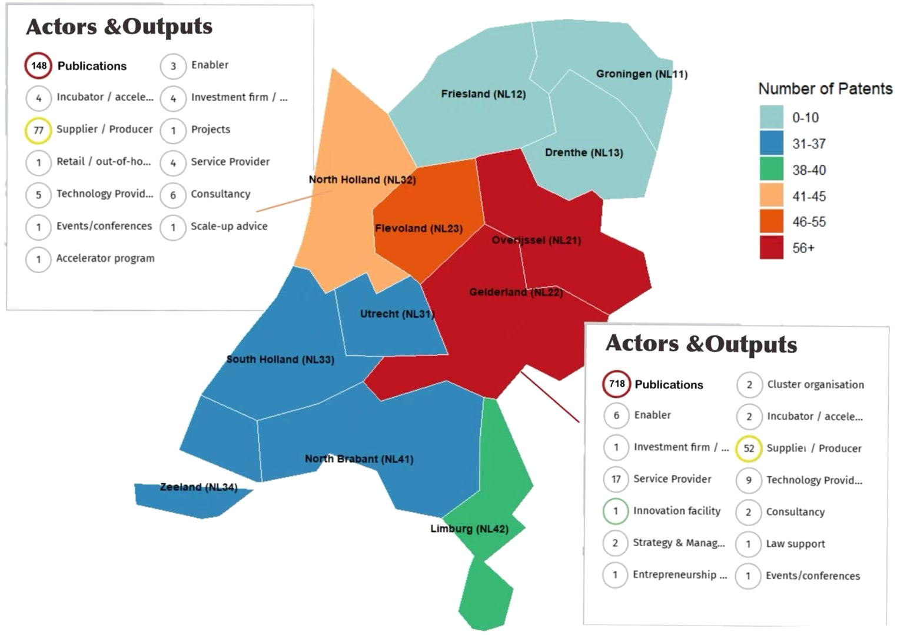

Why do the Netherlands' alt-protein researchers and its alt-protein market never quite talk to each other?
Data analysis & policy recommendations · with Fengdi Miao
Background
A term paper for a policy-analysis course, looking at the regional innovation system behind the Dutch alternative-protein industry. We found a structural gap: Gelderland concentrates most of the R&D (centred on Wageningen University), while Noord-Holland is the market and capital hub (centred on Amsterdam), but the two barely connect. That's a textbook "valley of death" between research and commercialisation.

publication & patent output by province
What I did
Used patent and publication data to quantify how the output, and the type of output, differs between the two provinces.
Mapped the collaboration network between innovation actors (companies, investors, service providers) in each province, to show visually who is working with whom, and who is isolated.
Built policy recommendations on cross-regional coordination using the Comparative Regional Innovation System (CRIS) framework.
deadline night, still on schedule
718 papers vs. 148, in reverse for patents.Gelderland produced 718 publications versus 148 in Noord-Holland, but patent output and market-facing actors (suppliers/producers) skew the other way. Strong on research, weak on commercialisation, and vice versa: exactly where policy should focus on bridging the gap.
Result
That mismatch between the two provinces is the core finding: none of it is really about one region "winning", it's about the fact that the two halves of the same value chain barely talk to each other.